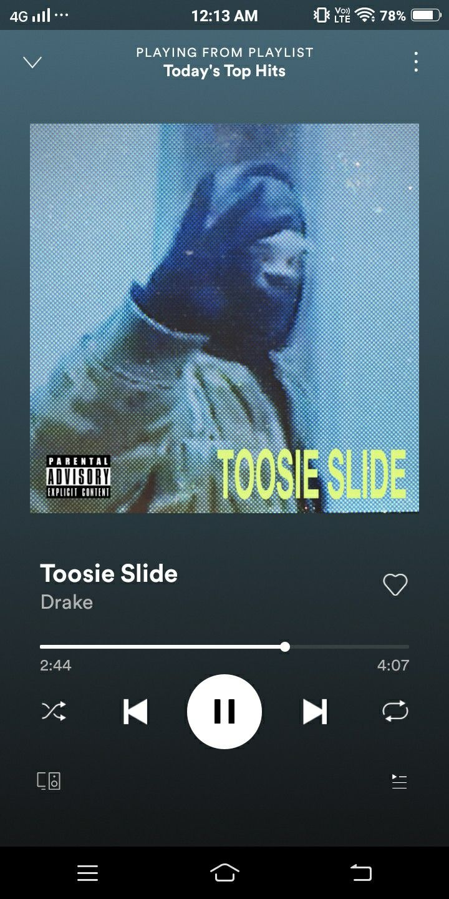
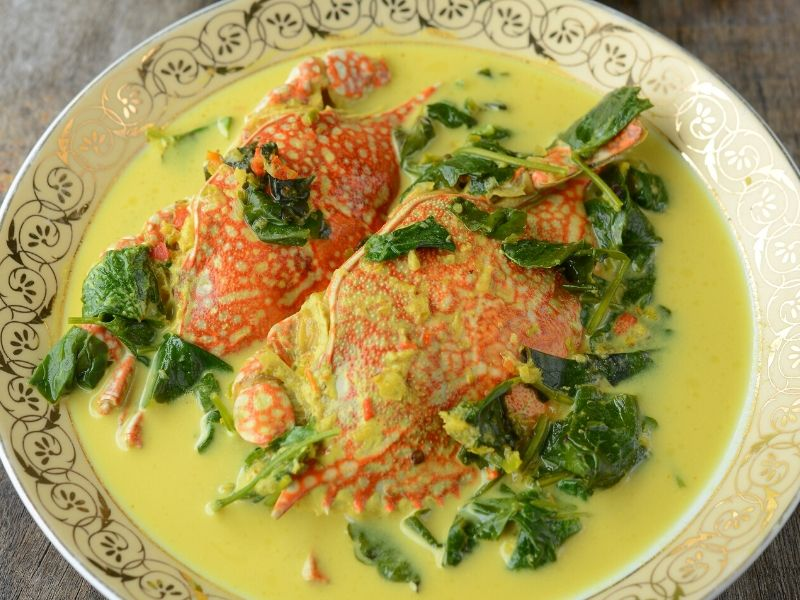

My Favourite Things
These are some of my favourite things that bring joy and inspiration in my life.

Music
This is the type of music I'd listen to while going for a late night drive
Badminton
My friends and I play badminton at least three times a week, and we do it just for fun and friendly competition.

Animes
This anime became my favourite because it's the first anime that I watched. The storyline and characters are perfect; it's just masterpiece.

Foods
I really enjoy eating gulai lemak ketam because of its rich coconut gravy and the delicious taste of fresh crab.

Games
I love playing games. The one I like the most is eFootball PES because the gameplay feels so realistic to me.